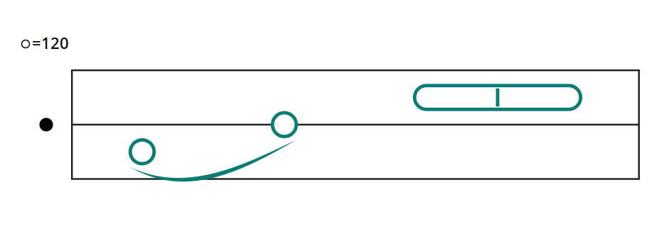

Read, write, and share
Use the rules together in one phrase, then see how music can be written and shared.
Rule: Find the octave marker and tempo first. Read each note's height, then its start and width. Read extra marks last.

Read it step by step
- Find the octave dot and tempo.
- Read each note's height.
- Count starts and widths in beats.
- Read any extra marks.
A phrase is a short musical thought. This one rises from C to D to E, then ends with a longer note. The curved slur joins the first two smoothly.
Writing Tristaff
Tristaff can be written on paper. The challenge is precision: every semitone needs its own height, and each beat needs a consistent width. A small placement error can make a pitch or length unclear. This asks for more exact spacing than a five-line staff, where a sharp or flat can change a pitch without moving the note.
Tristaff was designed for digital editing. A program can keep those positions exact while you move or change notes. madscore is one implementation that lets you write a Tristaff score and hear it.